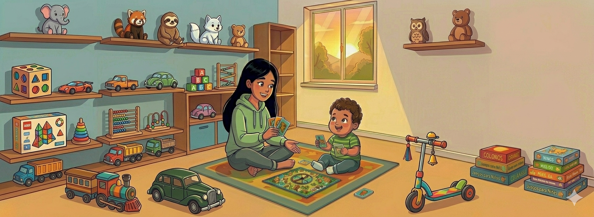
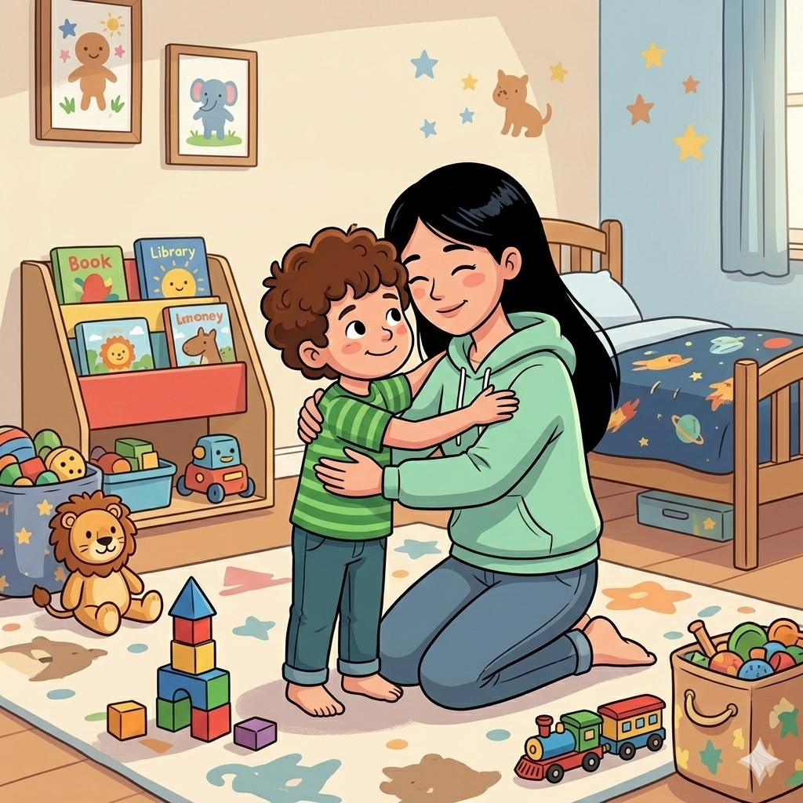
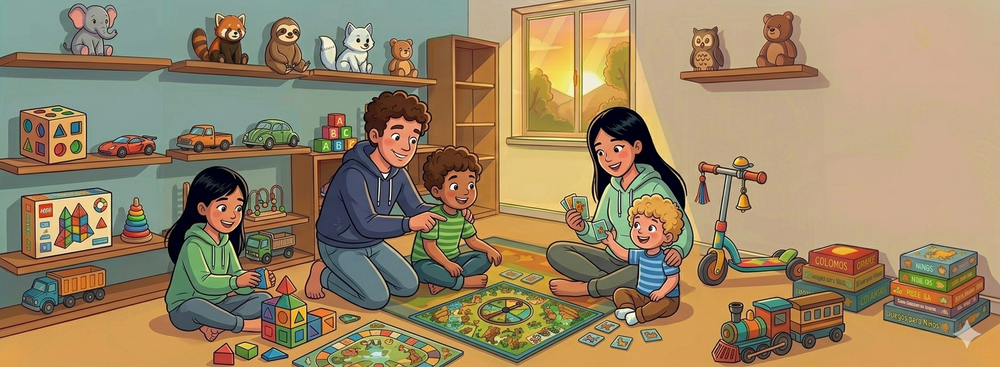
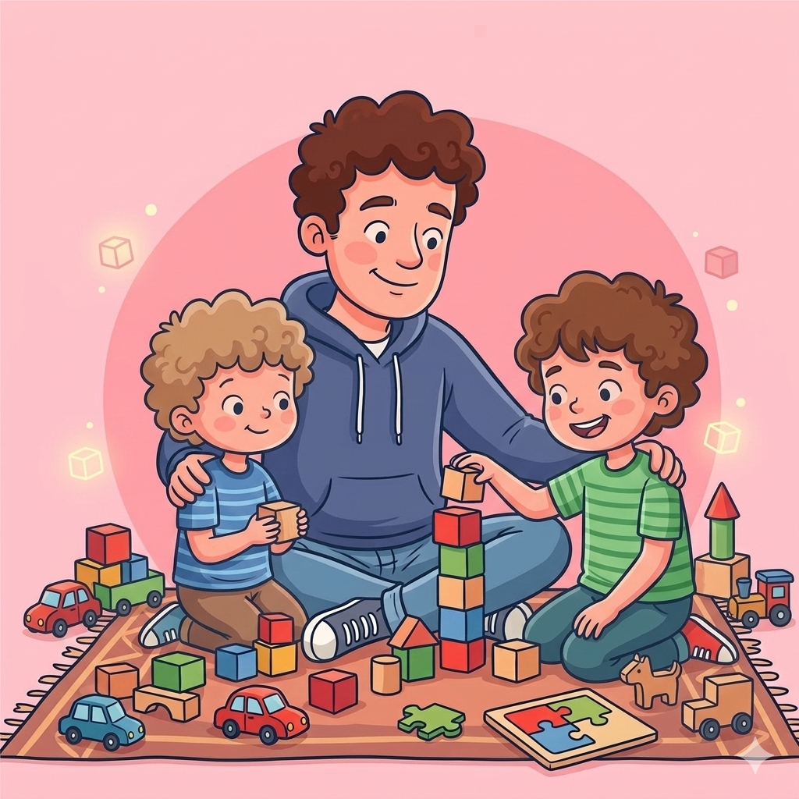

Un camino de amor, aprendizaje y esperanza junto a un hijo con autismo
Inicio
Este espacio nace con el propósito de compartir nuestra experiencia como familia,
con la esperanza de acompañar a otros padres que recorren un camino similar.
Aquí contamos nuestra historia capítulo a capítulo, desde la honestidad,
el amor y el aprendizaje constante.
El autismo, o Trastorno del
Espectro Autista
(TEA), es una condición del neurodesarrollo que afecta la comunicación,
la interacción social y el comportamiento, caracterizada por patrones
repetitivos y/o intereses restringidos, y que se manifiesta de forma diferente
en cada persona, creando un "espectro" amplio de
desafíos y fortalezas, con necesidades de apoyo variables.
Capítulo 1: El inicio de nuestro camino

Hola, quiero hablar un poco de mi vida como padre de un niño con autismo.
Mi hijo tiene 6 años y desde el día de su nacimiento nuestra historia ha estado llena de desafíos.
Su parto fue muy difícil; ese día estuve a punto de perder a mi esposa y a mi hijo.
Fueron momentos de mucho miedo e incertidumbre, pero gracias a Dios ambos sobrevivieron.
Durante los primeros meses, todo parecía normal. Nuestro hijo crecía como cualquier
otro bebé y no notábamos nada fuera de lo común. Sin embargo, antes de que cumpliera
su primer año de vida, comenzamos a notar que algunos de sus comportamientos no eran
iguales a los de otros niños.
"Nuestro hijo no necisitaba padres perfectos, sino padres presentes."
Un momento que nunca olvidaré fue cuando una vecina nos visitó con su hijo, que tenía
la misma edad que el nuestro. Al verlos juntos, nos dimos cuenta de que el otro niño
tenía intereses distintos, ya pronunciaba algunas palabras y prestaba mucha atención
a las indicaciones de su madre. Nuestro hijo, en cambio, parecía estar en su propio mundo.
En ese instante, aunque no lo entendíamos del todo, algo dentro de nosotros nos dijo
que el camino no sería igual.
Durante mucho tiempo, especialmente mi esposa, se negó a aceptar que nuestro hijo
pudiera tener alguna condición. Cada vez que los médicos hacían alguna sugerencia
sobre su estado cognitivo o mencionaban la necesidad de iniciar un proceso de
diagnóstico, su malestar era evidente. Para ella, escuchar esas palabras era como
aceptar algo que aún no estaba preparada para enfrentar.
Esa situación nos llevó a tener muchas discusiones como pareja. Sin darnos cuenta,
estábamos luchando entre el miedo, la negación y el dolor, cuando en realidad lo
más importante debía ser darle prioridad a la atención oportuna de nuestro hijo.
Hoy entiendo que no se trataba de falta de amor, sino de no saber cómo manejar una
realidad tan difícil.
Cuando mi esposa comenzó a documentarse y a informarse sobre los comportamientos
de nuestro hijo, poco a poco empezó a aceptar que su condición era real. Entendió
que la negación no era a ella a la persona que más daño le hacia, sino a nuestro hijo.
Él necesitaba, lo antes posible, el acompañamiento profesional adecuado para poder
desarrollar una vida lo más normal posible dentro de su condición.
Fue entonces cuando ella misma tomó la decisión de buscar ayuda. Empezó a contactar
a profesionales que pudieran analizar el caso de nuestro hijo, iniciar el proceso
de diagnóstico y determinar cuáles serían las terapias y los apoyos necesarios para
su desarrollo. Ese paso no fue fácil, pero fue un acto de amor, valentía y responsabilidad
como madre.

Capítulo 2: Los avances, los desafios del día a día y cómo seguimos creciendo como familia.

En una clínica de la ciudad, mi esposa y yo asistimos a una cita con un especialista
en neuropediatría. Durante la consulta, el doctor nos realizó una entrevista extensa
en la que indagó distintos aspectos de la vida de nuestro hijo: desde su nacimiento,
su forma de comportarse, hasta su proceso de desarrollo.
Después de escucharnos atentamente, nos indicó que era necesario realizar una evaluación
adicional con un neuropsicólogo pediatra, quien debía aplicar una serie de pruebas para
determinar el grado de su condición. El doctor fue claro al decirnos que todas las
situaciones que le habíamos expuesto eran determinantes para un diagnóstico de autismo.
Al mismo tiempo, elaboró varias órdenes de acompañamiento profesional en áreas como el
lenguaje, la terapia ocupacional, el comportamiento y la psicología.
Todo este proceso lo realizamos con el mayor amor del mundo, poniendo siempre las
necesidades de nuestro hijo por encima de las nuestras. Nuestra prioridad era que él
recibiera el acompañamiento profesional adecuado para que su desarrollo no se viera
interrumpido ni estancado.
En lo personal, este proceso me afectó profundamente. Me dolía ver la frustración de
mi esposa y, al mismo tiempo, pensar que vivimos en una sociedad donde cualquier
diferencia frente a lo que mal llamamos “normalidad” puede convertirse en una barrera
para el futuro de un niño. Aun así, decidí ser fuerte, porque entendí que nuestro
hijo no necesitaba padres perfectos, sino padres presentes y dispuestos a luchar por él.
Capítulo 3: Cuando entendí que mi lugar estaba en casa
Cuando los especialistas nos entregaron las recomendaciones para iniciar las terapias,
sentí que entrábamos en una nueva etapa. Ya no era solo el diagnóstico; ahora comenzaba
la acción. Lenguaje, terapia ocupacional, psicología, seguimiento constante. Todo era necesario.
Todo era urgente.
Pero detrás de esa organización médica había algo que al principio no vi con claridad: el peso real del
proceso.
Mi esposa fue quien asumió la coordinación de todo. Llamadas interminables, Autorizaciones,
Trámites administrativos, Cambios de horarios, Traslados constantes con los dos niños, Salas de espera y
varias citas por semana.
Yo estaba concentrado en mi trabajo. En mi mente, estaba cumpliendo mi rol: sostener económicamente el
hogar,
asegurar que nada faltara. Pensaba que esa era mi manera de apoyar. Y lo era… pero no era suficiente.
Mientras yo estaba enfocado en cumplir metas laborales, ella estaba emocional y físicamente agotada.
Y lo más difícil no fue el cansancio, fue la soledad que empezó a sentir.
La frustración comenzó a notarse. No porque no amara lo que hacía, sino porque se sentía sola en la
batalla.
Cargando trámites, niños, diagnósticos y emociones sin el respaldo diario que necesitaba de mí.
Recuerdo el momento en que entendí que esto nos estaba sobrepasando como pareja. No fue una gran
discusión.
Fue algo más silencioso: verla agotada, verla frustrada, verla llorar en momentos en los que yo no había
estado presente.
Ahí entendí algo que me confrontó profundamente como hombre.
Yo creía que estaba siendo responsable. Pero ser responsable no es solo proveer. Es estar.
Tuve que hacerme una pregunta incómoda:
¿Estoy usando el trabajo como refugio para no enfrentar lo que está pasando en casa?
Esa pregunta me golpeó fuerte.
Decidí entonces reorganizar mis prioridades. No fue sencillo. Implicó dejar compromisos laborales,
ajustar mis deberes profesionales y, sobre todo, romper una idea muy arraigada en mí sobre lo que
significa “ser un buen padre”.
Empecé a llevar a mi hijo a sus terapias ocupacionales y psicológicas. Me quedaba en casa con el
menor cuando era necesario. Aprendí las rutinas, entendí los ejercicios, escuché a los terapeutas. Me
involucré.
Y algo cambió.
No solo en mi hijo. En mí.
Comencé a ver de cerca sus avances. A celebrar cosas que antes no dimensionaba. Verlo aceptar cambios
inesperados
en la rutina. Notar cómo mejoraba su comunicación. Cómo empezaba a seguir indicaciones de otras
personas.
Cómo esperaba su turno. Cómo su deseo por asistir a las terapias crecía en lugar de disminuir.
Eso fue una lección enorme: cuando el acompañamiento es respetuoso y amoroso, el niño no lo vive como
imposición,
sino como oportunidad.
También llegó el jardín infantil. Confieso que tenía miedo. Miedo a la exclusión. A la incomprensión. A
que la
palabra “diferente” se transformara en barrera. Pero ocurrió lo contrario.
La persona a cargo nos habló con conocimiento y experiencia. Nos dio esperanza real, no promesas vacías.
Adaptaron un salón con pocos niños, con características similares, con una dinámica más tranquila y
acompañamiento cercano.
Y vimos florecer a nuestro hijo.
Empezó a valerse por sí mismo en tareas cotidianas. Comer sin ayuda. Vestirse solo. Ir al baño sin
apoyo. Mirar a las personas cuando le hablaban. Aceptar el contacto físico. Saludar.
Cada logro era una conquista.
Recuerdo pensar: para muchos esto es normal. Para nosotros es un milagro cotidiano.
Y lo más hermoso fue notar que aquel hijo que un día necesitó el ejemplo de su hermano menor, ahora
comenzaba a convertirse
en ejemplo para él. La dinámica se equilibró. Ya no era solo quien recibía guía; ahora también la
ofrecía.
Eso me enseñó algo más: el crecimiento no es lineal, pero es posible.
Las terapias de lenguaje y la escolarización transformaron nuestra comunicación. Ya no dependíamos
únicamente de la intuición o de la rutina para entenderlo.
Ahora podía expresar lo que quería, lo que sentía, lo que necesitaba.
Y cuando un hijo puede expresar su mundo interior, los padres respiramos diferente.
Hoy miro atrás y entiendo que ese momento en que decidí priorizar a mi familia no fue una renuncia. Fue
una redefinición.
No dejé de ser proveedor. Me convertí en presencia.
No dejé de trabajar. Aprendí que el éxito no se mide solo en resultados laborales, sino en la capacidad
de sostener a los que amas cuando más te necesitan.
Ser padre de un niño con autismo me obligó a madurar. A cuestionar mis ideas sobre fortaleza.
A entender que la verdadera fuerza no está en resistir solo, sino en acompañar.
Y si algo tengo claro es esto:
nuestro hijo no necesitaba un padre perfecto,
necesitaba un padre dispuesto a quedarse.

Guía para Familias | 6 de marzo de 2026
Acompañando el Camino: Lo que todo padre debe saber sobre el autismo hoy
Recibir un diagnóstico de Trastorno del Espectro Autista (TEA) para un hijo es un momento que cambia la
vida.
En este 2026, la visión ha evolucionado: ya no miramos el autismo como una "enfermedad que curar", sino
como
una forma diferente de procesar el mundo que requiere comprensión, estructura y, sobre
todo,
mucho amor.
1. El Poder de la Intervención Temprana
La ciencia actual es clara: el cerebro de los niños tiene una plasticidad asombrosa. Detectar señales
antes
de los 24 meses y comenzar terapias basadas en el juego y la comunicación funcional marca una diferencia
abismal
en la autonomía futura. No esperes a que "se le pase"; si tu instinto te dice algo, busca un
especialista.
"Tu hijo no es un diagnóstico. El diagnóstico es simplemente el mapa que te ayudará a entender cómo
enseñarle a
navegar en un mundo que no siempre habla su mismo idioma."
2. Cuidar al Cuidador: Tu bienestar importa
Es común que como padres nos olvidemos de nosotros mismos. Sin embargo, para que tu hijo esté bien, tú
necesitas
estarlo. El agotamiento crónico (burnout parental) es real. Busca redes de apoyo, asiste a grupos de
padres y
recuerda que pedir ayuda no te hace menos capaz, te hace más fuerte.
3. Estrategias Prácticas para el Hogar
En la actualidad, contamos con herramientas digitales y visuales que facilitan el día a día. Aquí tres
pilares
básicos:
Anticipación: Usa apoyos visuales para explicar qué pasará después. Esto reduce
drásticamente
la ansiedad.
Intereses Profundos: Si a tu hijo le fascinan los dinosaurios o los trenes, usa eso
como puente
para enseñarle matemáticas o habilidades sociales.
Ambientes Calmos: Crea un "rincón de la calma" en casa donde pueda regularse
sensorialmente
cuando el mundo exterior se vuelva demasiado ruidoso.
Mirando hacia el futuro
El camino no siempre es lineal, habrá días de grandes victorias y otros de desafíos profundos. Pero
recuerda:
cada pequeño logro es un paso gigante. Hoy en 2026, la sociedad está más abierta a la neurodiversidad;
sigamos
construyendo ese espacio donde tu hijo pueda ser simplemente él mismo.
Navegando el Espectro: Consejos prácticos para el Día a Día.
Vivir con un hijo dentro del espectro autista (TEA) es un viaje de aprendizaje constante. No existen
fórmulas
mágicas, pero sí herramientas que pueden transformar el caos en una rutina manejable y llena de momentos
significativos. Aquí te comparto algunas estrategias clave para aplicar en el hogar:
1. El Poder de la Anticipación y la Estructura
Para muchos niños con TEA, la incertidumbre genera ansiedad. La estructura no es rigidez, es
seguridad
Agendas visuales: Utiliza pictogramas o pizarras para mostrar el orden de las
actividades
(desayuno, escuela, terapia, juego). Saber qué viene después reduce drásticamente las crisis por
transición,
este fue lo más valioso que aprendi en el nuevo jardin infantil.
Relojes de arena o temporizadores: Ayudan a "ver" cuánto tiempo falta para terminar
una
actividad, facilitando el cambio de una tarea a otra.
2. Simplica la Comunicación
A veces, menos es más. Cuando el sistema de procesamiento sensorial está saturado, las instrucciones
largas se pierden.
Lenguaje directo: En lugar de decir "Hijo, ¿podrías ir a la habitación y traer tus
zapatos?", intenta con: "Zapatos. Vamos"
Dale tiempo: Un cerebro neurodivergente puede tardar unos segundos extra en
procesar una instrucción. Espera al menos 10 segundos antes de repetir la frase.
3. Crea un "Refugio Sensorial"
El mundo puede ser muy ruidoso, brillante y abrumador. Identifica qué estímulos molestan a tu hijo y crea
un espacio seguro en casa.
Puede ser una esquina con cojines, una tienda de campaña pequeña o simplemente un lugar con luz
tenue donde pueda
autorregularse sin exigencias externas.
4. El Autocuidado no es un Lujo, es Combustible
Este es el consejo que más solemos ignorar. No puedes cuidar adecuadamente si tu "vitalidad o fuerza"
está en cero.
Grupos de padres: Conecta con otros padres que entiendan tu realidad sin juzgar.
Delegar es de valientes: Si tienes el apoyo (familia, amigos o profesionales),
permite que te ayuden
con tareas pequeñas para que puedas descansar, aunque sea 20 minutos.
5. Celebra las "Pequeñas" Grandes Victorias
En el autismo, los hitos pueden verse distintos a los de los niños neurotípicos.
Que haya probado un alimento nuevo, que haya mantenido el contacto visual un segundo más o que haya
logrado
vestirse solo, son triunfos enormes. Valóralos y recuérdalos en los días difíciles.
Nota importante: Cada niño es un mundo. Lo que funciona para uno puede no funcionar
para otro. La clave está en la
observación constante y en recordar que tú eres el experto número uno de tu hijo.
inicio →Estrategias de Aprendizaje | 14 de marzo de 2026
"El Espejo de los Hermanos".
Esta Estrategia busca aprovechar la conexión natural entre hermanos para reforzar el lenguaje y la
identificación
de conceptos sin la presión de una enseñanza directa.
1. Preparación del Entorno
Ubícate en un espacio común donde ambos niños se sientan cómodos.
Utiliza materiales visualmente atractivos (bloques de madera, tarjetas de colores o figuras),
en mi caso particular me ha funcionado muy bien enseñar mientras jugamos.
2. La Dinámica de Enseñanza Indirecta
Enfoque inicial: Comienza la lección con tu hijo neurotipico de forma lúdica.
Exclama de forma
divertida y con entusiasmo la información que deseas trasmitir: "¡Mira, este es un círculo rojo!".
Espacio de invitación: No fuerces a tu hijo con TEA a unirse al grupo. Permite que
esté en el
mismo espacio. La clave es que él sienta que es un juego libre, no una evaluación.
Refuerzo de eco: Cuando tu hijo repita lo que les estas enseñando (como un color,
una forma, identifique un número o letra),
valida su aporte de inmediato con alegría, pero sin interrumpir el flujo del juego:
"¡Exacto! Es un triángulo,
¡qué bien, lo sabes!".
3. Conceptos Clave de esta experiencia
Concepto
Lo que he observado en casa
Aprendizaje sin Presión
Al no ser una "clase" directa, la resistencia desaparece y surge la curiosidad natural por
lo que hace su hermano.
Modelado entre Pares
Ver a su hermano jugar y aprender le da un referente cercano y seguro, eliminando el miedo
al error.
Validación Positiva
Celebrar el acierto de forma espontánea refuerza su seguridad y lo motiva a seguir
participando voluntariamente.
El Valor de la Espera
Respetar sus tiempos para identificar un concepto, sin presionarlo, es lo que realmente
genera un aprendizaje sólido.